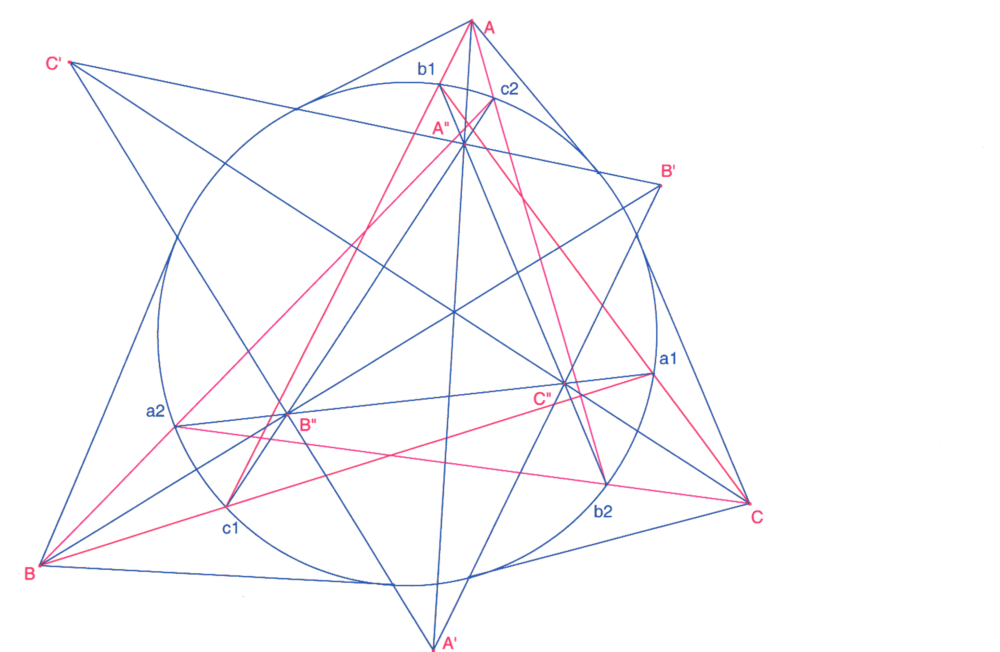

Problema 82.
Problema de Castillón Dada una circunferencia T y tres puntos M, N
y P, construir con regla y compás un triángulo ABC inscrito en
T cuyos lados respectivamente pasen por M, N y P.
Solución de François Rideau. Maitre de Conférences à l'Université de Paris 7 (7 de abril de 2003) (traducción del editor)

Las polares de A, B, C forman un tri´ngulo A'B' C'.Sea A'' la intersección de AA' y B'C'
Sea B'' la intersección de BB' y C'A'
Sea C'' la intersección de CC' y de A'B'.
Sean a1 y a2 las intersecciones de B'' C'' y del círculo.
Sean b1 y b2 las intersecciones de C'' A'' y del círculo.
Sean c1 y c2 las intersecciones de A'' B'' y del círculo.
a1b1c1 y a2b2c2 son los triángulos solución